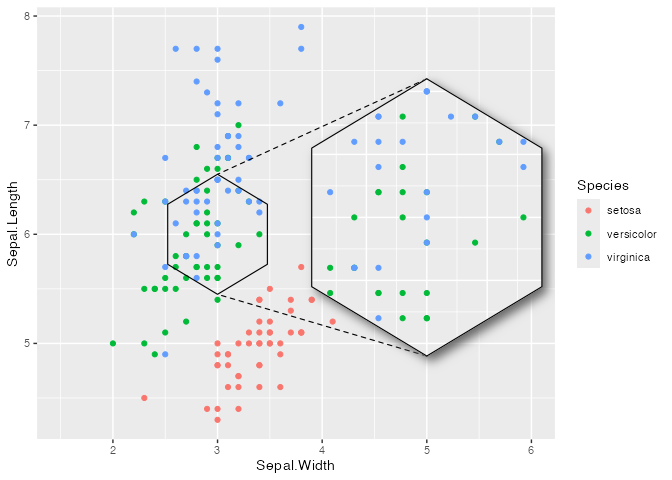
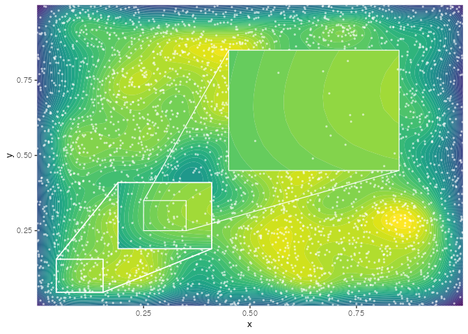
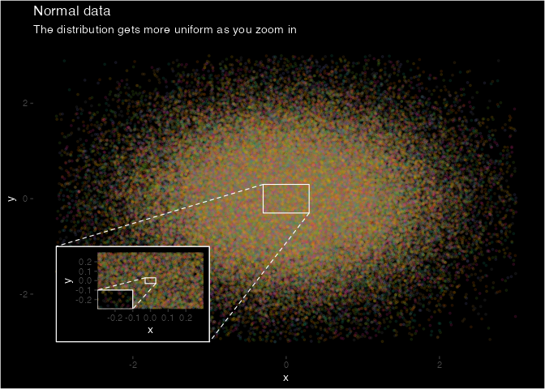

ggmagnify creates a magnified inset of part of a ggplot object. The magnified area can be a (rounded) rectangle, an ellipse, a convex hull of points, or an arbitrary shape. Borders can be drawn around the target area and the inset, along with projection lines and/or shading between the two. The inset can have a drop shadow.
You can install ggmagnify from r-universe:
install.packages("ggmagnify", repos = c("https://hughjonesd.r-universe.dev",
"https://cloud.r-project.org"))This will install the latest github release (currently ggmagnify 0.4.2).
Or install the development version from GitHub with:
# install.packages("remotes")
remotes::install_github("hughjonesd/ggmagnify")Basic inset
To create an inset, use geom_magnify(from, to). from can be a vector giving the four corners of the area to magnify: from = c(xmin, xmax, ymin, ymax).
Similarly, to specifies where the magnified inset should go: to = c(xmin, xmax, ymin, ymax).
library(ggplot2)
library(ggmagnify)
ggp <- ggplot(dv, aes(Position, NegLogP)) +
geom_point(color = "darkblue", alpha = 0.8, size = 0.8) +
labs(title = "GWAS p-values for cognitive function",
subtitle = "Davies et al. (2018).", y = "-log(p)")
from <- c(xmin = 9.75e7, xmax = 9.95e7, ymin = 16, ymax = 28)
# Names xmin, xmax, ymin, ymax are optional:
to <- c(2e8 - 2e7, 2e8 + 2e7,10, 26)
ggp + geom_magnify(from = from, to = to)
Inset with shadow
# install.packages("ggfx")
ggp + geom_magnify(from = from, to = to,
shadow = TRUE)
Rounded corners
Use corners to give a proportional radius for rounded corners.
ggp + geom_magnify(from = from, to = to,
corners = 0.1, shadow = TRUE)Ellipse
This requires R 4.1 or higher, and an appropriate graphics device.
ggp + geom_magnify(from = from, to = to,
shape = "ellipse", shadow = TRUE)
Pick points to magnify
To choose points to magnify, map from in an aes():
ggpi <- ggplot(iris, aes(Sepal.Width, Sepal.Length, colour = Species)) +
geom_point() + xlim(c(1.5, 6))
ggpi + geom_magnify(aes(from = Species == "setosa" & Sepal.Length < 5),
to = c(4, 6, 6, 7.5))Faceting
ggpi +
facet_wrap(vars(Species)) +
geom_magnify(aes(from = Sepal.Length > 5 & Sepal.Length < 6.5),
to = c(4.5, 6, 6, 7.5),
shadow = TRUE)Magnify an arbitrary region
Use shape = "outline" to magnify the convex hull of a set of points:
library(dplyr)
starwars_plot <- starwars |>
mutate(Human = species == "Human") |>
select(mass, height, Human) |>
na.omit() |>
ggplot(aes(mass, height, color = Human)) +
geom_point() + xlim(0, 220) + ylim(0, 250) +
theme_dark() +
theme(panel.grid = element_line(linetype = 2, colour = "yellow"),
axis.line = element_blank(),
panel.background = element_rect(fill = "black"),
legend.key = element_rect(fill= "black"),
rect = element_rect(fill = "black"),
text = element_text(colour = "white")) +
scale_colour_manual(values = c("TRUE" = "red", "FALSE" = "lightblue")) +
ggtitle("Mass and height of Star Wars characters",
subtitle = "Humans magnified")
starwars_plot +
geom_magnify(aes(from = Human), to = c(30, 200, 0, 120), shadow = TRUE,
shadow.args = list(colour = "yellow", sigma = 10,
x_offset = 2, y_offset = 5),
alpha = 0.8, colour = "yellow", linewidth = 0.6,
shape = "outline", expand = 0.2)
#> Warning: Removed 1 row containing missing values or values outside the scale range
#> (`geom_point()`).Use a grid grob object or data frame to magnify any shape:
s <- seq(0, 2*pi, length = 7)
hex <- data.frame(x = 3 + sin(s)/2, y = 6 + cos(s)/2)
ggpi + geom_magnify(from = hex,
to = c(4, 6, 5, 7), shadow = TRUE, aspect = "fixed")
Maps
With maps, shape = "outline" magnifies just the selected map polygons:
usa <- sf::st_as_sf(maps::map("state", fill=TRUE, plot =FALSE))
ggpm <- ggplot(usa) +
geom_sf(aes(fill = ID == "texas"), colour = "grey20") +
coord_sf(default_crs = sf::st_crs(4326), ylim = c(10, 50)) +
theme(legend.position = "none") +
scale_fill_manual(values = c("TRUE" = "red", "FALSE" = "steelblue4"))
ggpm + geom_magnify(aes(from = ID == "texas"),
to = c(-125, -98, 10, 30),
shadow = TRUE, linewidth = 1, colour = "orange2",
shape = "outline",
aspect = "fixed",
expand = 0) 
Axes
ggp +
scale_x_continuous(labels = NULL) +
geom_magnify(from = from, to = to,
axes = "xy")Projection lines and borders
Colour and linetype
ggp +
geom_magnify(from = from, to = to,
colour = "darkgreen", linewidth = 0.5, proj.linetype = 3)Projection line styles
ggpi <- ggplot(iris, aes(Sepal.Width, Sepal.Length, colour = Species)) +
geom_point()
from2 <- c(3, 3.5, 6.5, 7)
to2 <- c(2.75, 3.75, 5, 6)
ggpi +
geom_magnify(from = from2, to = to2,
proj = "facing") # the default
ggpi +
geom_magnify(from = from2, to = to2,
proj = "corresponding") # always project corner to corner
ggpi +
geom_magnify(from = from2, to = to2,
proj = "single") # just one lineProjection fill
ggpi +
geom_magnify(from = from2, to = to2,
proj.fill = alpha("yellow", 0.2)) # fill between the lines
ggpi +
geom_magnify(from = from2, to = to2, shape = "ellipse",
proj.fill = alpha("orange", 0.2)) # works with any shapeTips and tricks
Graphics devices
geom_magnify() uses masks. This requires R version 4.1.0 or higher, and a graphics device that supports masking. If you are using knitr, you may have luck with the ragg_png device (which was used to create this README). If your device doesn’t support masks, only shape = "rect" will work, and the plot inset will not be clipped to the panel area.
Adding layers to the inset
geom_magnify() stores the plot when it is added to it. So, order matters:
ggpi <- ggplot(iris, aes(Sepal.Width, Sepal.Length, colour = Species)) +
geom_point() + xlim(2, 6)
from3 <- c(2.5, 3.5, 6, 7)
to3 <- c(4.7, 6.1, 4.3, 5.7)
ggpi +
geom_smooth() +
geom_magnify(from = from3, to = to3)
#> `geom_smooth()` using method = 'loess' and formula = 'y ~ x'
#> `geom_smooth()` using method = 'loess' and formula = 'y ~ x'
# Print the inset without the smooth:
ggpi +
geom_magnify(from = from3, to = to3) +
geom_smooth()
#> `geom_smooth()` using method = 'loess' and formula = 'y ~ x'For complex modifications to the inset, use the plot argument to set the plot explicitly. Use inset_theme() to customize theme defaults appropriately for an inset plot.
booms <- ggplot(faithfuld, aes(waiting, eruptions)) +
geom_contour_filled(aes(z = density), bins = 50) +
scale_fill_viridis_d(option = "B") +
theme(legend.position = "none")
booms_inset <- booms +
geom_point(data = faithful, color = "red", fill = "white", alpha = 0.7,
size = 2, shape = "circle filled") +
coord_cartesian(expand = FALSE) +
inset_theme()
shadow.args <- list(
colour = alpha("grey80", 0.8),
x_offset = 0,
y_offset = 0,
sigma = 10
)
booms + geom_magnify(from = c(78, 90, 4.0, 4.8), to = c(70, 90, 1.7, 3.3),
colour = "white", shape = "ellipse",
shadow = TRUE, shadow.args = shadow.args,
plot = booms_inset)Draw an inset outside the plot region
ggp +
coord_cartesian(clip = "off") +
theme(plot.margin = ggplot2::margin(10, 60, 10, 10)) +
geom_magnify(from = from, to = to + c(0.5e8, 0.5e8, 0, 0),
shadow = TRUE)Keep grid lines the same
To make sure the inset uses the same grid lines as the main graph, set breaks in scale_x and scale_y:
ggp2 <- ggplot(iris, aes(Sepal.Width, Sepal.Length, color = Species)) +
geom_point() +
theme_classic() +
theme(panel.grid.major = element_line("grey80"),
panel.grid.minor = element_line("grey90"))
# different grid lines:
ggp2 +
geom_magnify(from = c(2.45, 3.05, 5.9, 6.6), to = c(3.4, 4.4, 5.5, 6.6),
shadow = TRUE) 
# fix the grid lines:
ggp2 +
scale_x_continuous(breaks = seq(2, 5, 0.5)) +
scale_y_continuous(breaks = seq(5, 8, 0.5)) +
geom_magnify(from = c(2.45, 3.05, 5.9, 6.6), to = c(3.4, 4.4, 5.5, 6.6),
shadow = TRUE) Recomputing data
Use recompute if you want to recompute smoothers, densities, etc. in the inset.
df <- data.frame(x = seq(-5, 5, length = 500), y = 0)
df$y[abs(df$x) < 1] <- sin(df$x[abs(df$x) < 1])
df$y <- df$y + rnorm(500, mean = 0, sd = 0.25)
ggp2 <- ggplot(df, aes(x, y)) +
geom_point() +
geom_smooth(method = "loess", formula = y ~ x) +
ylim(-5, 5)
# The default:
ggp2 + geom_magnify(from = c(-1.25, 1.25, -1, 1),
to = c(2, 5, 1, 5))
# Recomputing recalculates the smooth for the inset:
ggp2 + geom_magnify(from = c(-1.25, 1.25, -1, 1),
to = c(2, 5, 1, 5),
recompute = TRUE)
Magnify twice
data <- data.frame(
x = runif(4000),
y = runif(4000)
)
ggm_unif <- ggplot(data, aes(x, y)) +
coord_cartesian(expand = FALSE) +
geom_density2d_filled(bins = 50, linewidth = 0, n = 200) +
geom_point(color='white', alpha = .5, size = .5) +
theme(legend.position = "none")
ggm_unif +
geom_magnify(from = c(0.05, 0.15, 0.05, 0.15), to = c(0.2, 0.4, 0.2, 0.4),
colour = "white", proj.linetype = 1, linewidth = 0.6) +
geom_magnify(from = c(0.25, 0.35, 0.25, 0.35), to = c(0.45, 0.85, 0.45, 0.85),
expand = 0, colour ="white", proj.linetype = 1)
An inset within an inset is a bit more complex, but also doable:
ggp <- data.frame(x = rnorm(1e5), y = rnorm(1e5),
colour = sample(8L, 1e5, replace = TRUE)) |>
ggplot(aes(x = x, y = y, colour = factor(colour))) +
scale_color_brewer(type = "qual", palette = 2) +
geom_point(alpha = 0.12, size = 0.7) +
lims(x = c(-3,3), y = c(-3,3)) +
theme_classic() + theme(panel.grid = element_blank(),
axis.line = element_blank(),
plot.background = element_rect(fill = "black"),
panel.background = element_rect(fill = "black"),
title = element_text(colour = "white"),
legend.position = "none")
ggpm <- ggp +
lims(x = c(-0.3, 0.3), y = c(-0.3, 0.3)) +
geom_magnify(from = c(-0.03, 0.03, -0.03, 0.03),
to = c(-0.3, -0.1, -0.3, -0.1),
expand = FALSE, colour = "white")
#> Scale for x is already present.
#> Adding another scale for x, which will replace the existing scale.
#> Scale for y is already present.
#> Adding another scale for y, which will replace the existing scale.
ggp +
geom_magnify(plot = ggpm,
from = c(-0.3, 0.3, -0.3, 0.3),
to = c(-3, -1, -3, -1),
expand = FALSE, colour = "white") +
labs(title = "Normal data",
subtitle = "The distribution gets more uniform as you zoom in")
#> Warning: Removed 570 rows containing missing values or values outside the scale range
#> (`geom_point()`).
Acknowledgements
ggmagnify was inspired by this post and motivated by making these plots.
Data for the GWAS plots comes from:
Davies et al. (2018) ‘Study of 300,486 individuals identifies 148 independent genetic loci influencing general cognitive function.’ Nature Communications.
Data was trimmed to remove overlapping points.